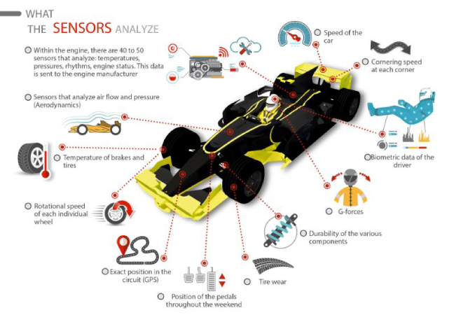
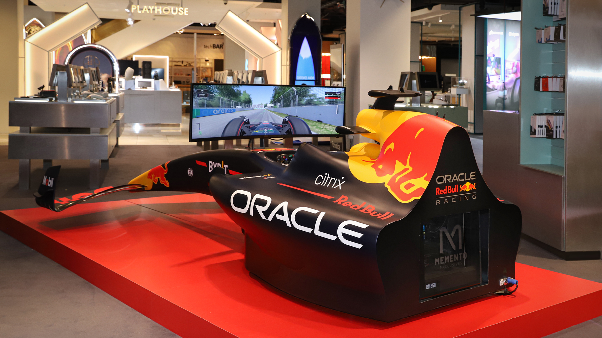

Oracle Red Bull Racing Domain Description
Oracle Red Bull Racing: A Computer Science Engineering Perspective
Oracle Red Bull Racing operates in the high-stakes, high-speed world of Formula 1 motorsport, where real-time decisions determine success. As a top-tier F1 team, Red Bull Racing leverages cutting-edge computing, data science, artificial intelligence, and cloud technologies — all core to Computer Science Engineering (CSE).
The domain integrates
Automotive engineering, real-time systems, cloud computing, and intelligent analytics to enhance car performance, team strategy, and fan engagement.
ü߆ Core Technical Pillars in CSE
- Real-Time Systems: Handle telemetry from 1000+ sensors per car, enabling millisecond-level decisions.
- Artificial Intelligence & Machine Learning: Support predictive analytics, driver behavior modeling, and race strategy simulations.
- Big Data & Cloud Computing (Oracle Cloud): Store and analyze terabytes of telemetry and simulation data using distributed cloud infrastructure.
- Simulation & Digital Twins: Use digital models to simulate car behavior under various track, weather, and mechanical conditions.
- Cyber-Physical Systems: Integrate software with physical systems like engines, tires, and aerodynamics.
- Human-Centered Computing: Power fan platforms and interactive systems through data-driven personalization and user experience analysis.
üîß Key Application Areas
| Application Area |
Description |
| Race Strategy Optimization |
AI models recommend optimal tire strategies, pit windows, and fuel usage in real time. |
| Vehicle Telemetry Monitoring |
Live sensor data helps engineers monitor performance, detect anomalies, and fine-tune systems. |
| Aerodynamics Simulation |
Computational Fluid Dynamics (CFD) models test virtual designs for speed, stability, and drag. |
| Predictive Maintenance |
Machine learning forecasts component wear and prevents failures mid-race or mid-season. |
| Driver Behavior Analysis |
Data models evaluate driving patterns to optimize performance and understand fatigue/risk. |
| Fan Engagement Platforms |
Oracle Cloud powers AI recommendations and content personalization for fans globally. |
| Cloud Data Infrastructure |
Supports high-performance computing and analytics required for real-time and pre-race simulations. |
This technology-driven domain showcases how Computer Science Engineering plays a pivotal role in enabling faster, smarter, and safer motorsport performance, making Red Bull Racing a leader on both the track and in the cloud.
Business Cases
1. Real-Time Race Strategy Optimization

Challenge: Make strategic decisions during a race—when to pit, tire selection, undercut/overcut, fuel management—all in real-time, considering changing weather, safety cars, and rival behavior.
Data Involved: Tire wear rates, lap times, weather conditions, competitor positions, fuel levels.
Algorithms Used:
- A* Search Algorithm: Used in overtaking simulation (find optimal path considering traffic and track layout).
- Monte Carlo Tree Search (MCTS): Simulates thousands of possible future race paths and chooses moves (pit stops, tire changes) that maximize reward (finishing position).
- Markov Decision Process (MDP): Models the race as a sequence of states with probabilistic outcomes (e.g., rain → pit probability ↑).
- Reinforcement Learning (Deep Q-Learning): Trains an AI agent to make pit/tire decisions based on past race data and simulations.
Business Impact:
- 2–3 sec/pit stop improvement.
- 15% better tire management.
View Code for Algorithms
2. Vehicle Telemetry Data Analysis

Challenge: Real-time monitoring of 1000+ sensors to detect performance anomalies, mechanical issues, or unsafe behavior.
Data Involved: Engine temperature, brake pressure, throttle & gear usage, GPS & accelerometer data.
Algorithms Used:
- Autoencoders: Train on "normal" data; any data that reconstructs poorly is flagged as an anomaly.
- Hidden Markov Models (HMM): Models sequential driving behaviors; detects abnormal transitions (e.g., brake too hard after throttle).
- Kalman Filters: Estimate true state of a system (e.g., speed, engine RPM) from noisy sensor readings.
- Dynamic Time Warping (DTW): Compares time-series laps (lap 1 vs lap 2 throttle data) for similarity.
Business Impact:
- 20% reduction in undetected mechanical issues.
- Enhanced driver safety through real-time anomaly detection.
View Code for Algorithms
3. Aerodynamics & CFD Simulation
Challenge: Improve car design by simulating airflow around the car. CFD is essential to test designs before wind tunnel testing or actual manufacturing.
Data Involved: Car geometry, wind speed and direction, pressure, velocity, turbulence data.
Algorithms Used:
- Finite Element Method (FEM) / Finite Volume Method (FVM): Numerically solve fluid flow equations (Navier-Stokes) over car surfaces.
- Multigrid Solvers: Accelerate the convergence of the solutions in CFD simulations.
- Conjugate Gradient Method: Solves large sparse systems of linear equations from CFD discretizations.
- Parallel Computing (MPI, CUDA): Distributes simulations over thousands of CPU/GPU cores in Oracle Cloud.
Business Impact:
- 30% cost reduction in physical testing.
- Faster iteration (hours vs. weeks).
View Code for Algorithms
4. Predictive Maintenance
Challenge: Predict failure of parts (brakes, engine, gearbox) before they occur, reducing DNFs (Did Not Finish).
Data Involved: Component vibration/fatigue, operating hours, oil temperature and pressure, historical failure logs.
Algorithms Used:
- Random Forest / XGBoost: Classify whether a part is likely to fail based on usage metrics.
- Survival Analysis (Cox Proportional Hazard): Estimates how long a component will survive before failure.
- LSTM Networks: Model time-series degradation of parts to predict Remaining Useful Life (RUL).
- K-Means / DBSCAN: Cluster operational states (normal vs failure-prone modes).
Business Impact:
- 25% reduction in race retirements due to mechanical failures.
- Significant savings in repair and replacement costs.
View Code for Algorithms
5. Driver Behavior & Performance Modeling
Challenge: Analyze driver inputs (throttle, brake, gear, steering) to improve consistency and efficiency.
Data Involved: Throttle % per lap, brake pressure, steering angle, sector times.
Algorithms Used:
- Principal Component Analysis (PCA): Reduces dimensionality and highlights main differences in driving style.
- t-SNE / UMAP: Visualizes laps or drivers in 2D space for clustering.
- RNN / LSTM: Analyze sequences of driver inputs to detect patterns or fatigue.
- Bayesian Networks: Probabilistic inference on driver decisions under uncertain conditions.
Business Impact:
- 0.5% lap-time improvement.
- Reduced injury risk via stress monitoring.
View Code for Algorithms
6. Fan Engagement & Sponsorship Analytics
Challenge: Engage global fans, recommend content, and measure sponsorship visibility ROI.
Data Involved: Social media activity, app/web usage logs, merchandise purchase history, sponsor logo exposure.
Algorithms Used:
- Collaborative Filtering (Matrix Factorization): Recommend merchandise, videos, or articles to fans.
- Sentiment Analysis (BERT, LSTM): Analyze fan sentiment from tweets, comments, and reviews.
- K-Means / Hierarchical Clustering: Segment fans into groups (casual, hardcore, merchandise buyers).
- A/B Testing Algorithms: Test which marketing campaigns or layouts work best.
Business Impact:
- 40% increase in fan spending.
- 2M+ new app users.
View Code for Algorithms
7. Digital Twin & Simulation

Challenge: Create real-time virtual replicas of the race car and its systems for simulation and testing.
Data Involved: Physical model of car, real-time sensor feedback, environmental conditions.
Algorithms Used:
- Agent-Based Modeling: Simulates individual components/agents (tires, driver, engine) interacting.
- Reinforcement Learning: Optimize system response to inputs (e.g., simulate crash avoidance strategies).
- Sim2Real Transfer Learning: Train in simulation, apply policies to real-world cars or simulators.
Business Impact:
- Improved car setup accuracy by 15%.
- Enhanced testing of safety-critical systems.
View Code for Algorithms
8. Cloud & Big Data Infrastructure (Oracle Cloud)
Challenge: Process, store, and analyze terabytes of data per race—real-time ingestion, high availability, and global access.
Data Involved: Telemetry logs, CFD outputs, video streams, fan analytics.
Algorithms Used:
- MapReduce / Apache Spark DAG Scheduling: Distribute telemetry log processing across nodes.
- Data Compression (LZ4, Snappy): Reduces storage and transmission time of sensor logs.
- Graph Algorithms (PageRank, Betweenness): Identify key influencers in fan networks.
- Load Balancing (Round Robin, Least Connections): Distribute incoming workload across cloud servers efficiently.
Business Impact:
- 50% faster data processing times.
- Global access to real-time race analytics.
View Code for Algorithms
Key Takeaways for Businesses
- Data-Driven Agility: Real-time insights enhance responsiveness in any industry.
- Cost Efficiency: Virtual testing reduces capital expenditures.
- Client Loyalty: Personalization drives engagement and retention.
- Performance Optimization: AI and ML improve efficiency and decision-making.